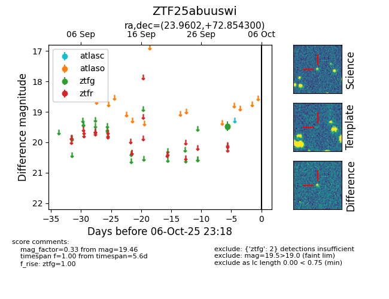

FINK: ZTF25abuuswi
Lasair: ZTF25abuuswi
ALeRCE: ZTF25abuuswi
ZTF25abuuswi (ztf,fink)
equatorial (ra, dec) = (23.9602,+72.85430)
galactic (l, b) = (126.2388,+10.26826)

last ztfg=19.46
2 ztfg detections